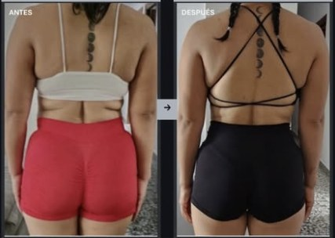
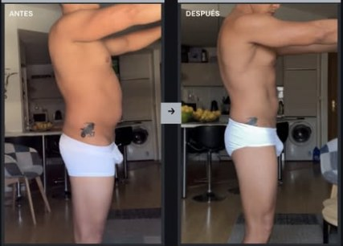
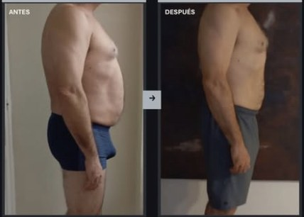
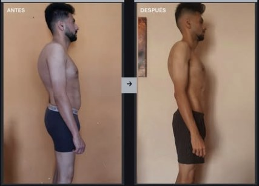
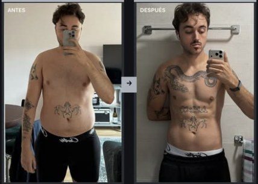
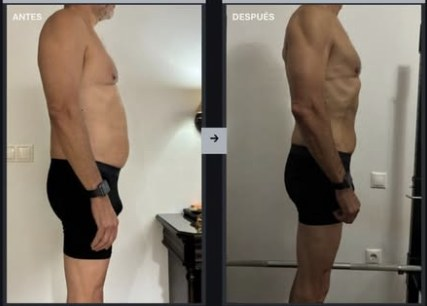
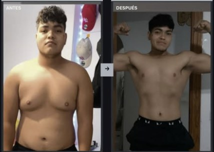
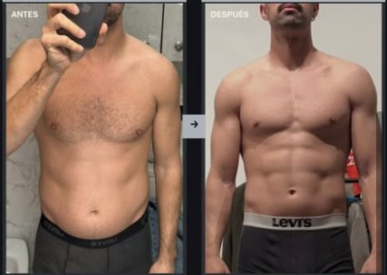
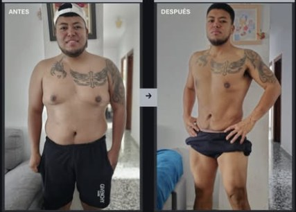
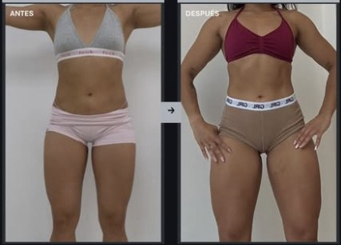

Arrancar
Se acaba el "empiezo el lunes". Fotos y medidas del día 1, tu plan sobre tu horario y el primer check-in esa misma noche.
Camareros, cocineros, dependientas, madres y padres con el día partido en dos: seguimiento diario, un plan que cabe en tu turno real y resultados garantizados por escrito. Más de 300 cambios. Tu horario no es la excusa.
El formulario son 2 minutos. Lo leemos nosotros y, si encajas, te escribimos para hablar con Andrés.



No te falta una rutina. Te falta alguien encima.
31 de 31 días contigo. Un minuto al día para contarme cómo ha ido, un plan hecho sobre tu turno y un objetivo que firmamos el primer día.
Personas que trabajan en hostelería o a turno partido y solas nunca han sido constantes: cambio físico con seguimiento diario y garantía de resultados por escrito.
Qué pasa: Se acaba el «empiezo el lunes». Las primeras 4 semanas seguidas sin desaparecer.
Qué haces tú: Check-in diario, entrenos pactados con tu turno, foto y medidas del día 1.
Qué pasa: El cambio se ve en fotos y medidas. En la semana 12 medimos la garantía.
Qué haces tú: Subes cargas, ajustamos la comida a tu horario y revisamos cada semana.
Qué pasa: Lo mantienes cuando cambia el turno, en vacaciones o en temporada alta.
Qué haces tú: Sigues con el check-in diario, pero cada vez decides tú más.
Por qué: Lo que se reporta cada día no se abandona. Es el 31 de 31.
Por qué: Sin datos no hay ajustes ni garantía.
Por qué: El plan se ajusta a tu horario: por eso el horario deja de ser excusa.
Prueba: +300 cambios · casos de 17 a 64 años, hombres y mujeres · «22 kg perdidos en 6 meses: Bryan Torres, padre de familia y camarero a turno partido».
Para los que solos no lo consiguen: alguien encima cada día y un resultado garantizado por escrito. Las 3 no negociables son, a la vez, las condiciones de la garantía.
Se acaba el "empiezo el lunes". Fotos y medidas del día 1, tu plan sobre tu horario y el primer check-in esa misma noche.
El cambio se ve en fotos y medidas. Ajustes cada semana. En la semana 12 comparamos con el objetivo firmado.
Lo mantienes aunque cambie el turno, llegue el verano o la temporada alta. Sales sabiendo hacerlo.
Entreno, comida, pasos y sueño en 1 minuto por WhatsApp. Te contesto yo. Si un día se tuerce, se ajusta ese día.
Enfermedad, lesión o embarazo congelan el plazo. No aplica si no se cumplen los requisitos (el propio check-in lo registra) ni a objetivos no medibles. Condiciones completas en el contrato que firmas al empezar. Leer las condiciones.
Más de 300 cambios. Aquí, algunos, de 17 a 64 años. Con su permiso.
22 kg perdidos en 6 meses. Padre de familia y camarero a turno partido.Bryan Torres · cliente
Es madre y trabaja a turno partido.
Aun así transformó su físico.
Varios trabajos y sin descanso.
No sabía cómo entrenar.
64 años y vida sedentaria.
No había entrenado nunca. Pensaba que era tarde para cambiar.

Pensaba que solo necesitaba una rutina.
Para cambiar su cuerpo le faltaba otra cosa.

Desde los 17 años sin hacer deporte.
Ni él esperaba conseguir este cambio.

Con 62 años.
Ha conseguido lo que muchos creen imposible.

Muchísimos complejos.
Evitaba ir a la playa a toda costa.

Siempre fue deportista.
Pero su cuerpo no respondía bien.

De no saber cuidarse…
…a ser un ejemplo para su familia.

De no saber cómo cuidarse…
…a transformar su físico.
2 minutos: de qué trabajas, qué horario tienes y qué quieres cambiar.
Si encajas, te escribimos y en 20 minutos te dice cómo sería en tu caso y qué te puede garantizar.
Fotos y medidas del día 1, tu plan sobre tu horario y el primer check-in esa misma noche.
Lo leemos personalmente. Si encajas, te escribimos para hablar con Andrés.
Un mensaje de 1 minuto cada noche por WhatsApp: si has entrenado, cómo has comido, tus pasos y cómo has dormido. Te contesto y, si algo se tuerce, lo ajustamos ese mismo día.
El objetivo medible que firmamos el primer día. Si en 12 semanas cumples los requisitos (check-in, foto y medidas semanales y tus entrenos) y no llegas, sigo contigo sin coste hasta que llegues. Las condiciones completas están arriba y en el contrato.
Sí. El plan se monta sobre tu horario real: entrenos cortos donde caben y comida que puedes hacer en el trabajo. Varios de mis casos trabajan en hostelería y a turno partido.
Hablamos de entrenos de unos 40 minutos y un minuto de check-in al día. Lo que falla casi nunca es el tiempo: es hacerlo sin nadie.
Tengo clientes de 62 y 64 años que no habían entrenado nunca. Antes de empezar, el visto bueno de tu médico; después, se empieza por lo básico.
Sí. Plan, seguimiento y revisiones a distancia, con el check-in diario por WhatsApp.
Es lo ideal, pero si tu horario no lo permite, se adapta a casa.
Sí. Hombres y mujeres, de 17 a 64 años en mis casos.
Depende de tu caso y del plan. Rellena el formulario y te lo explica Andrés en la llamada, junto con la garantía.
O escribe CAMBIO por privado a @andrestrivi6.